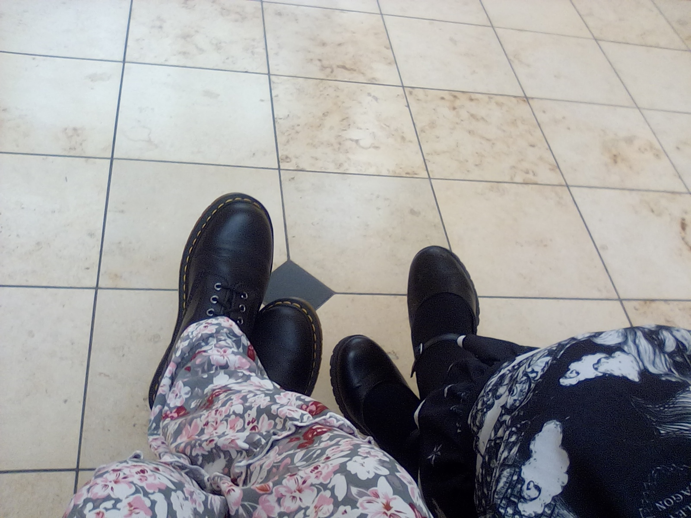
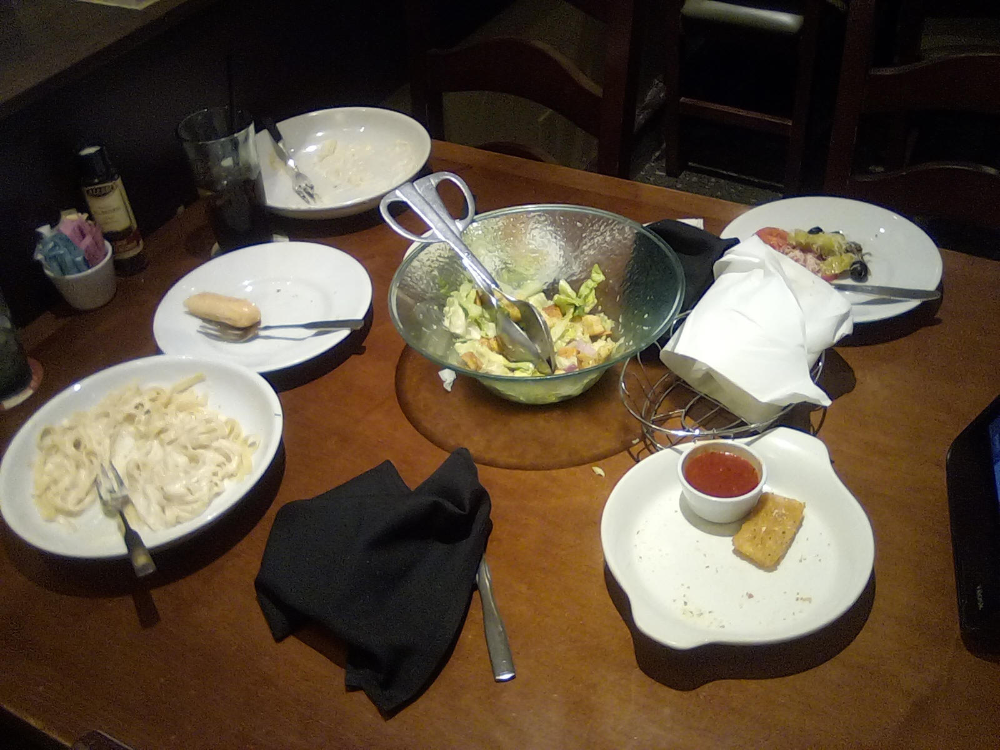
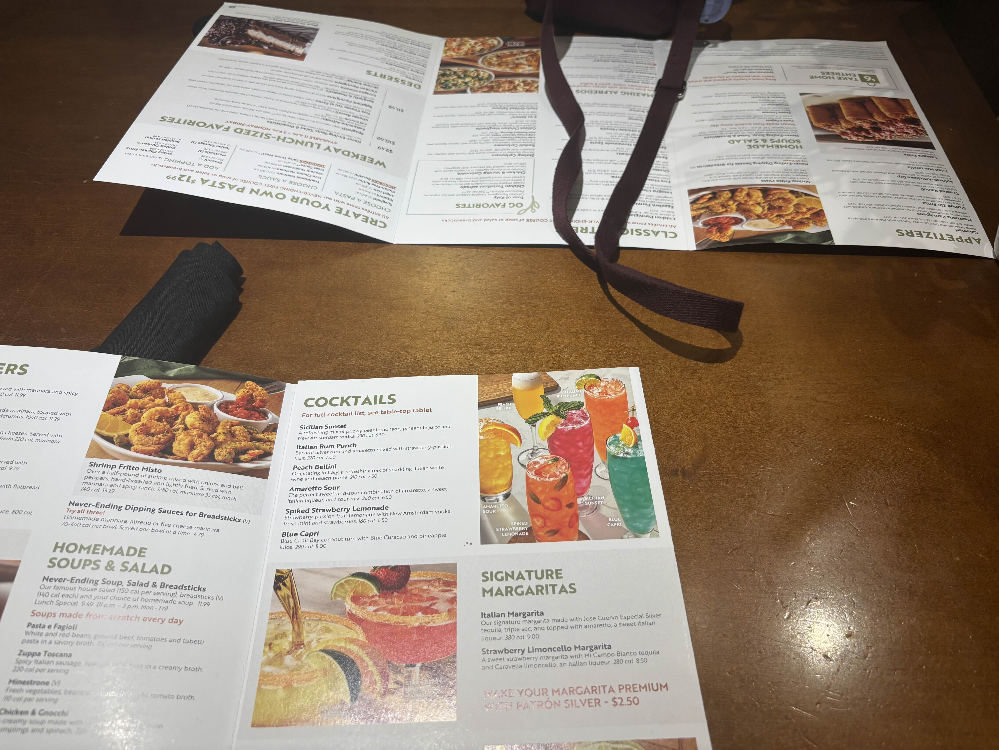
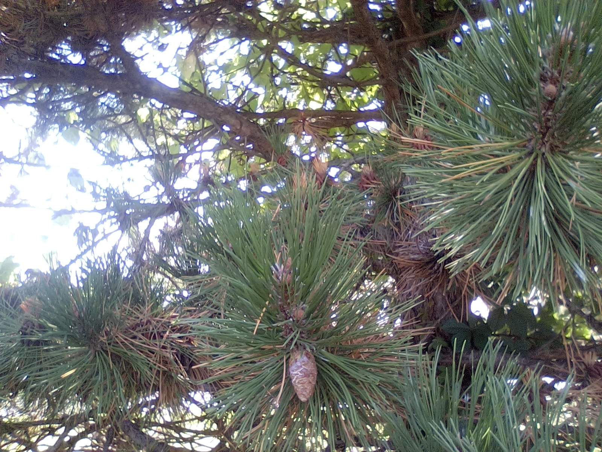

LaZuLi PaRaDisE - My Wonderful GF


Me and my amazing Girlfriend have been together since February
23rd of 2025 (this year). We met online in a discord server when I was doing
a little trolling.(cringe i know) 
We became friends at first, but over time i started to develop feelings for
her. I couldn't get her out of my head. Even when we were talking to each
other, I'd just be
thinking about her the entire time I wasn't with her. She was always so nice
to me, and she made my heart race. I have never been attracted to a woman
before,
let alone to the extent I am to her. Eventually she told me that she has
feelings for me, and we started dating. After 4, almost 5 months of dating
online, a week ago
from today, on the 28th of June 2025, we met in person for the very first
time. It was truly the best day of my entire life. Never before have I felt
so loved.
We had such a good time together. First thing we did was go to one of my
favorite places to eat, which will not be disclosed due to OPSEC concerns.
Then we went to
a mall. I am pretty poor (she is rich) so she purchased a few things, but
not too much because I don't like it when she spends a ton of money on me.
Most of the time we
were at the mall was just spent hanging out and walking together. After
that, we went to eat at Olive Garden, which is the first time I have ever
ate anything there ever.
I'm a very picky eater so I hardly ever try new food, but she got me to try
some kind of italian stuff. I think it was called "fettuccine alfredo". It
was alright, but we it needed
salt, which our table didnt have and I was too scared to ask for it, and she
wouldn't do it LOL! I also had some kind of mozzarella things and they
were pretty good. I tried the
breadsticks too and they were alright. She had a salad, but im not a rabbit
so i dont eat leafs. After that we went back to the hotel and spent the rest
of the night together.
We only spent a day together sadly, and walking away from her to get into
the car to go home was one of the most painful things I've ever had to do. I
really hope that
we can see each other again soon, and hopefully move in together soon and
start our lives together. She means the world to me, and I can't imagine
what I'd do with out her.
Below are a few images I took with her. I would of taken videos, but I was
so scared and nervous when she pulled into my neighborhood to pick me up
that I forgot my
camcorder and didn't get to record any videos together :((. But we took
photos! And here they are!!
(Me on the left, her on the right)

(Our Olive Garden date, mine is closest to the camera)

(Another photo of the dinner, this time from her iphone. U can see the straps of my purse with my tamagotchi on it)

(This is just a random tree, there was a cute dove but i dont think u can see him well in it)
She got me 2 plushies. One of the is this stupid shrimp that she keeps obsessing over saying that im a shrimp(im NOT) and she got me a build a bear!
Ironically, I did not get a bear but rather a cow named willfred. I am 2 lazy to get a photo of them, so i will attach photos of those at a later date!
I gave her a little glow in the dark alien dude and a water color painting with a love note on the back. She also got me a big 32 ounce Mt.Dew which is
my favorite soda, and that was pretty refreshing while walking around the mall (fountain Mt.Dew is literally the best soda)
_
{\o/}
/_\
made by LaZuLi PaRaDisE|XMPP/Email:
LaZuLiPaRaDisE@disroot.org